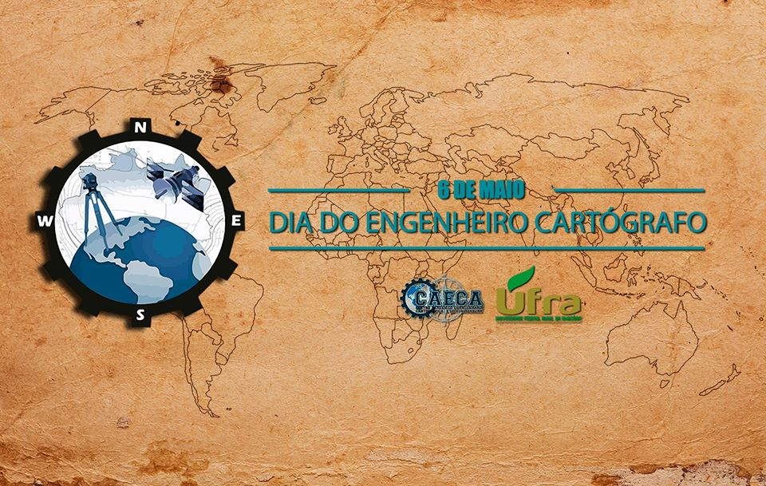

Seja bem vindo!
Site destinado a postagem de notícias e informações do curso de Engenharia Cartográfica e de Agrimensura da Universidade Federal Rural da Amazônia.
Site destinado a postagem de notícias e informações do curso de Engenharia Cartográfica e de Agrimensura da Universidade Federal Rural da Amazônia.
Site destinado a postagem de notícias e informações do curso de Engenharia Cartográfica e de Agrimensura da Universidade Federal Rural da Amazônia.
A Universidade Federal Rural da Amazônia (Ufra), pela primeira vez, teve um de seus cursos de graduação avaliados com a nota máxima pelo Ministério da Educação (MEC). O curso de Engenharia Cartográfica e de Agrimensura recebeu o conceito final 5, nota equivalente a “excelente”.
Leia mais